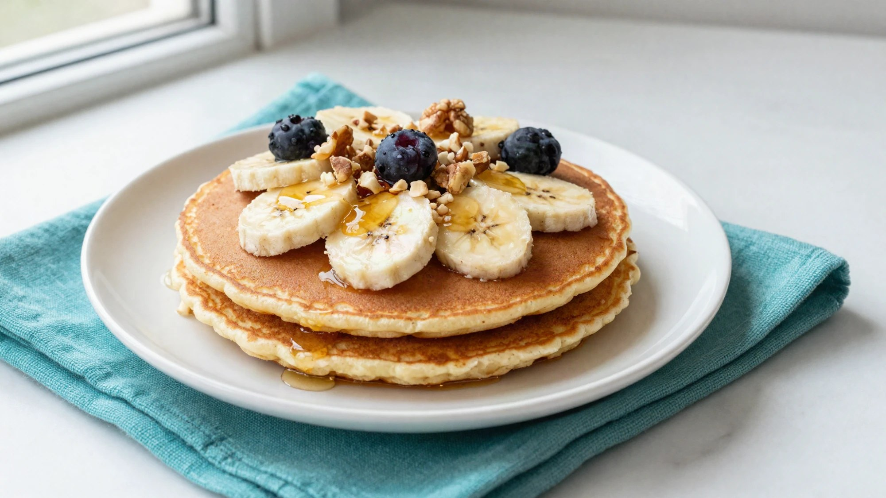

DESAYUNOS Y MERIENDAS
Pancake individual
Ingredientes
- 1 huevo
- 3 cdas de avena o harina de avena
- 1 cda de leche descremada o bebida vegetal
- Unas gotas de esencia de vainilla
- 1 cdita de polvo de hornear
Preparación
- Mezclá todos los ingredientes en un bowl.
- Calentá una sartén antiadherente a fuego mínimo y volcá la mezcla.
- Cuando aparezcan las primeras burbujas en la superficie, dalo vuelta y cociná del otro lado.
- Serví con el topping que prefieras: fruta, frutos secos, semillas, canela, cacao amargo, coco rallado o pasta de maní.